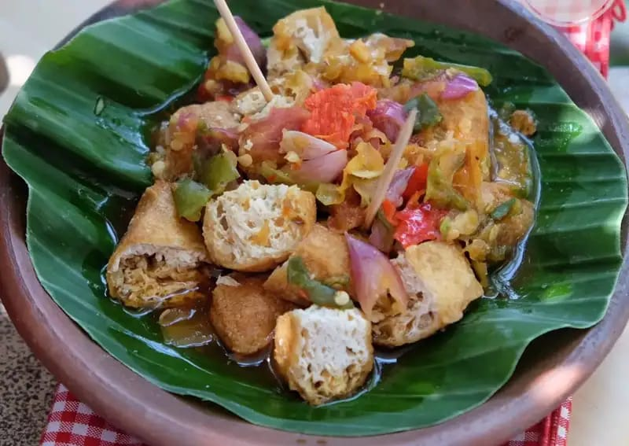

| Tahu gejrot adalah makanan khas Cirebon yang terkenal sebagai makanan khas Sunda juga. Tahu gejrot dibuat dari tahu Sumedang yang sudah dipotong-potong, kemudian disajikan dengan bumbu cabai yang segar. Bumbu segar umumnya terbuat dari kencur, bawang putih, bawang merah, dan cabai rawit. |  |
| (Sumber: www.orami.co.id) |